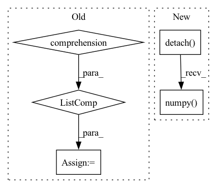

Pattern ID :8734

Before Change
def _variable_to_array(var, to_cpu=True):
if isinstance(var, (tuple, list)):
array = [v.data if isinstance(v, chainer.Variable) else v for v in var]
if to_cpu:
array = [cuda.to_cpu(v) for v in array]
return tuple(array)
After Change
array = {}
for key, v in var.items():
if to_numpy:
v = v.detach().cpu().numpy()
array[key] = v
return array
else:
In pattern: SUPERPATTERN
Frequency: 3
Non-data size: 5
Instances
Fragment ID: 32428390
Project Name: yuta-hi/pytorch_bayesian_unet
Commit Name: e996e0983c760a01ed617e1f3cfcbdaa8b41b242
Time: 2020-03-30
Author: hiasa.yuta.ht7@is.naist.jp
File Name: pytorch_bcnn/inference/inferencer.py
M Class Name: AnonimousClass
N Class Name: AnonimousClass
M Method Name: _variable_to_array(2)
N Method Name: _variable_to_array(2)
M Parent Class:
N Parent Class:
M File Name: pytorch_bcnn/inference/inferencer.py
N File Name: pytorch_bcnn/inference/inferencer.py
M Start Line: 72
M End Line: 92
N Start Line: 72
N End Line: 91
'>
Before Change
P = 10
points = np.concatenate(
[X.projection(_G.sample()) for _ in range(P)],
axis=1
)
assert points.shape == (X.dim, P)
B = 5
features = np.random.randn(B, in_rep.size, P)
filters = np.zeros((out_rep.size, in_rep.size, basis.dim, P), dtype=np.float)
filters = basis.sample(points, out=filters)
self.assertFalse(np.isnan(filters).any())
self.assertFalse(np.allclose(filters, np.zeros_like(filters)))
a = basis.sample(points)
b = basis.sample(points)
assert np.allclose(a, b)
output = np.einsum("oifp,bip->bof", filters, features)
for g in G.testing_elements():
output1 = np.einsum("oi,bif->bof", out_rep(g), output)
transformed_points = X.action(inclusion(g)) @ points
transformed_filters = basis.sample(transformed_points)
transformed_features = np.einsum("oi,bip->bop", in_rep(g), features)
output2 = np.einsum("oifp,bip->bof", transformed_filters, transformed_features)
if not np.allclose(output1, output2):
print(f"{in_rep.name}, {out_rep.name}: Error at {g}")
After Change
print(f"{in_rep.name}, {out_rep.name}: Error at {g}")
print(a)
aerr = torch.abs(output1 - output2).detach().numpy()
err = aerr.reshape(-1, basis.dim).max(0)
print(basis.dim, (err > 0.01).sum())
for idx in range(basis.dim):
if err[idx] > 0.1:
'>
Fragment ID: 32428389
Project Name: quva-lab/escnn
Commit Name: 98a89c5f80da2d489df613d8c73d943c69fb7f51
Time: 2022-08-28
Author: gabriele.cesa@gmail.com
File Name: test/kernelspaces/test_restrictedwignereckart.py
M Class Name: TestWEbasis
N Class Name: TestWEbasis
M Method Name: _check_irreps(6)
N Method Name: _check_irreps(6)
M Parent Class: TestCase
N Parent Class: TestCase
M File Name: test/kernelspaces/test_restrictedwignereckart.py
N File Name: test/kernelspaces/test_restrictedwignereckart.py
M Start Line: 224
M End Line: 274
N Start Line: 309
N End Line: 353
'>
Before Change
distogram, dump_distograms_path / f"dist_model_{i:02}.jpg"
)
averaged_outputs = [
torch.stack(model_output).mean(axis=0) for model_output in zip(*outputs)
]
return averaged_outputs
After Change
if dump_distograms_path:
dump_distograms_path = Path(dump_distograms_path)
for i, output in enumerate(outputs):
distogram_distribution = output["dist"].cpu().detach().numpy()
distogram = distogram_distribution_to_distogram(distogram_distribution)
plot_distogram(
distogram, dump_distograms_path / f"dist_model_{i:02}.jpg"
)
'>
Fragment ID: 32428387
Project Name: learn-ventures/trdesign-pytorch
Commit Name: 3781c5aaf6b84c2935adf5a195e8c032e64e0819
Time: 2021-03-17
Author: xandersteenbruggex@gmail.com
File Name: src/tr_Rosetta_model.py
M Class Name: trRosettaEnsemble
N Class Name: trRosettaEnsemble
M Method Name: forward(4)
N Method Name: forward(4)
M Parent Class: nn.Module
N Parent Class: nn.Module
M File Name: src/tr_Rosetta_model.py
N File Name: src/tr_Rosetta_model.py
M Start Line: 251
M End Line: 269
N Start Line: 257
N End Line: 270